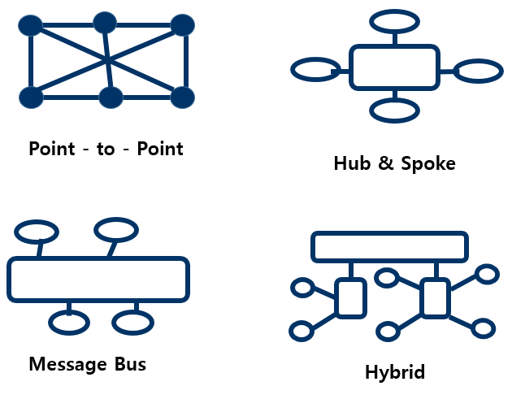

프로토콜의 3요소
구문 (데이터를 어떻게 구성, 코딩, 신호 레벨), 의미(데이터를 구체적으로 어떻게 제어, 처리방법, 에러 발생시 정보), 타이밍(통신이 이뤄질 때 속도 조절, 데이터가 동시에 통신할 때 순서 관리)
- 물리적 측면 : 자료 전송에 쓰이는 전송매체, 접속용 단자 및 전송 신호, 회신 규격 등을 말한다.
- 논리적 측면 : 프레임의 구성, 프레임 안에 있는 각 항목의 뜻과 기능, 자료 전송의 절차등을 담는다.
ERD
개체, 속성, 관계
보안
기밀성(오직 인가된 사람만 접근 가능), 무결성(고의적, 비인가, 우연한 변경으로부터 보호), 가용성(사용자가 필요한 시점에 접근 가능해야함)
릴레이션 이상현상
- 삽입 이상(릴레이션에 데이터를 삽입할 때 의도와는 상관없이 원하지 않은 값들도 함께 삽입)
- 삭제 이상(릴레이션에 데이터를 삭제할 때 의도와는 상관없는 값들도 함께 삭제)
- 갱신 이상(릴레이션에서 튜플에 있는 속성 값을 갱신할 때 일부 튜플의 정보만 갱신되어 정보에 모순이 생기는 현상)
객체지향프로그램 OOP
캡슐화, 상속, 추상화, 다형성, 정보은닉
테스트 실행 여부 테스트
정적 테스트(워크스루, 인스펙션, 코드검사 - 프로그램 실행하지 않고 명세서나 소스 코드로 분석), 동적 테스트(블랙박스 테스트, 화이트박스 테스트 - 프로그램 실행하면서 오류 찾음)
테스트 기반 테스트
- 명세 기반 테스트(동등 분할, 경계값 분석 - 사용자 요구사항에 따라 명세를 빠짐 없이 테스트 케이스로 만들어 구현하는지 테스트)
- 구조 기반 테스트(구문 기반, 결정 기반, 조건 기반 - 소프트웨어 내부의 논리 흐름에 따라 테스트 케이스를 작성하고 확인 테스트)
- 경험 기반 테스트(에러 추정, 체크 리스트, 탐색적 테스팅 - 유사 소프트웨어나 기술 등에 대한 테스터의 경험을 기반으로 수행하는 테스트, 사용자의 요구사항에 대한 명세가 부족하거나 테스트 시간에 제약이 있는 경우 수행하면 효과적)
시각 기반 테스트
검증 테스트(개발자 시각, 제품이 명세서대로 되었는지), 확인 테스트(사용자 요구)
목적 테스트
- 회복(결함 실패 후 복구)
- 안전(불법적 침입 보호)
- 강도(과부화 시 정상 실행)
- 성능(실시간 성능, 효율)
- 구조(논리적 경로, 코드 복잡도)
- 회귀(변경, 수정 코드에 결함 확인)
- 병행(변경 sw와 기존 sw에 동일한 데이터 입력해 결과 비교)
UML
시스템 개발자와 고객 또는 개발자 상호간의 의사소통이 원활하게 이루어지도록 표준화한 대표적인 객체지향 모델링 언어
UML의 구성요소
사물, 관계, 다이어그램
디자인패턴
생성, 구조, 행위
IPv4
전송방식 : 유니캐스트, 멀티캐스트, 브로드캐스트
IPv6의 전송방식
IPv4의 확장형. 128비트 16비트씩 :으로 구분. 전송방식 : 유니캐스트, 멀티캐스트, 애니캐스트
XML
W3C에 의해 개발, 웹브라우저간 호환 되지 않는 문제와 SGML 의 복잡함을 해결하기 위해 개발된 다목적 마크업 언어
JSON
개방형 표준 포맷, Ajax에서 많이 사용. XML을 대체하는 주요 데이터 포맷.
XrML
디지털 콘텐츠, 웹 서비스 권리 조건을 표현한 XML 기반의 언어.
PL/SQL
표준 SQL을 바탕으로 Oracle에서 개발한 데이터 조작 언어로 확장 기능이 우수
Ajax
브라우저가 갖고 있는 XMLHttpRequest 객체를 이용해 새로 고침 없이 페이지 일부분 데이터 로드
EAI 비즈니스 서비스 통합(연계 솔루션)
기업에서 운영되는 서로 다른 플랫폼, 애플리케이션 들 간의 정보 전달, 연계, 통합을 가능하게 해주는 솔루션. 송수신 시스템에 설치되는 어댑터를 사용하는 간접 연계 방식 기술, 데이터 병목 현상 최소화
- Point to Point : 가장 기본적, 변경 재사용 어려움
- Hub & Spoke : 허브 시스템 확장, 유지보수 용이
- Message Bus : 미들웨어 두고 처리, 뛰어난 확장성
- Hybrid : Hub & Spoke + ESB, 병목 현상 최소화

랜드어택
공격자가 패킷의 출발지 주소나 포트를 임의 변경. 공격 대상 컴퓨터 속도를 느리게 하거나 동작을 마비해서 서비스 거부 상태 빠짐.
스머핑/스머핑공격
출발지 주소를 공격 대상의 IP로 설정해 희생자에게 대량의 트래픽을 발생시켜 마비시키는 DoS 공격
스푸핑(도용하다)
"속이기"라는 의미, 다른 시스템의 신뢰 관계를 속여서 침입하는 해킹 기술 용어. 인터넷 프로토콜인 TCP/IP의 구조적 결함을 이용해 사용자의 시스템 권한을 획득
- IP 스푸핑 목표로 하는 호스트와 신뢰 관계를 맺는 다른 호스트로 공격자의 IP주소를 속여서 패킷을 보냄. (유명 사이트 메일 도용해서 스팸메일 전송)
- DNS 스푸핑 : 도메인 네임서버에 가짜 DNS 레코드를 전달해서 목표로 하는 호스트가 잘못된 주소 정보를 이용하게 하는 기법. (DNS 스푸핑 공격을 통해 개인정보를 수집하면 그것을 파밍(Pharming)이라고 한다.)
스니핑(냄새를 맡다 = 도청)
ID나 패스워드등 다른 상대방의 패킷을 엿봄.(드라마에서 주인공이 문 앞에서 다른 이의 대화를 엿듣는 것)
스누핑(염탐하다)
네트워크 상에 중요한 정보를 염탐. 획득. 스니핑은 훔쳐보는 정도
피싱
공격자가 다수에게 피싱 메일을 발송. 수신자가 링크되있는 사이트를 클릭해 위장된 사이트에 접속. 금융정보를 입력해 개인정보 탈취.
스미싱(단문 문자SMS + 피싱)
문자 메세지를 보내 URL 링크를 통해 악성코드 설치후 개인정보 탈취 및 원격 조종
파밍
합법적으로 소유하고 있던 사용자의 도메인을 탈취 또는 DNS 서버나 Proxy 서버의 주소를 변조해서 사용자가 진짜 사이트로 오인해 접속한 뒤 입력한 개인정보를 훔치는 수법. *피싱이 이메일을 위장해 링크를 유도한다면, 파밍은 도메인 자체를 중간에서 갈취. 악성코드에 감염된 사용자 PC는 정상적인 주소를 입력해도 파밍 사이트로 연결되며, 주소창에는 정상적인 사이트로 표시
제로데이 공격
컴퓨터 소프트웨어의 취약점을 공격하는 기술적 위협, 해당 취약점에 대한 패치가 나오지 않은 시점에서 이뤄지는 공격
랜섬웨어(ransomware)
몸값과 소프트웨어 합성, PC 자료 암호화해서 피해자에게 돈을 지급하도록 강요하는 악성코드
APT, 지능형 지속공격
특정 타겟을 목표로 하여 다양한 수단을 통한 지속적, 지능적 맞춤형 공격.
CSRF / 사이트 간 요청 위조
웹 앱의 취약점. 사용자가 자신의 의지와 무관하게 공격자가 의도한 행동을 해서 특정 웹페이지를 보안에 취약하게 하거나 수정, 삭제 작업을 하게 만듦.
DDoS / 분산 서비스 거부
여러 대의 공격자를 분산 배치하여 동시에 동작하게 해서 특정 사이트를 공격.
크라임웨어 (Crimeware)
온라인 상에서 불법 활동을 조장하기 위해 만들어진 컴퓨터 프로그램. 공격용 툴킷이라고 불리며 보통 취약점을 이용하도록 미리 프로그램 된 악성코드 등으로 구성되어 원하는 형태로 공격을 감행하고나 공격을 자동화할 수 있다. 인터넷에서 곧바로 사용할 수 있으며 키로거를 은밀히 설치시켜 불법적으로 정보를 수집해가기도 한다.
허니팟 (Honeypot)
정보시스템의 침입자를 속이는 기법의 하나로, 가상의 정보시스템을 만들어 놓고 실제로 공격을 당하는 것처럼 보이게 하여 해커나 스팸, 바이러스를 유인하여 침입자들의 정보를 수집하고 추적하는 역할을 수행
버퍼 오버플로우 (Buffer OverFlow)
정해진 메모리의 범위를 넘치게 해서 원래의 리턴 주소를 변경시켜 임의의 프로그램이나 함수를 실행시키는 시스템 해킹 기법
RUDY ( RUDY; R-U-Dead-Yet, Slow HTTP POST Dos )
요청 헤더의 Content-length를 비정상적으로 크게 설정하여 메시지 바디 부분을 매우 소량으로 보내 계속 연결 상태를 유지시키는 공격
IP 스푸핑 (IP Spoofing)
공격자가 자신의 인터넷 프로토콜(IP) 주소를 변조하거나 속여서 접근 제어 목록(ACL)을 우회하거나 회피하여 공격하는 것으로 변조된 IP주소를 이용하여 DoS나 연결된 세션을 차단하여 공격에 대한 추적을 어렵게 만드는 공격 기술
MD5
RFC 1321로 지정되어 있으며, 주로 프로그램이나 파일이 원본 그대로인지를 확인하는 무결성 검사 등에 사용된다. 1991년 로널드 라이베스트가 예전에 쓰이던 MD4를 대체하기 위해 고안된 128비트 암호화 해시 함수
DES
56bit의 키를 이용하여 64bit의 평문 블록을 64bit의 암호문 블록으로 만드는 블록 암호 방식의 미국 표준(NIST) 암호화 알고리즘
PKI / 공개키 기반 구조
공개키 암호 방식으로 디지털 인증서를 활용하는 소프트웨어, 하드웨어, 사용자, 정책 및 제도 등을 총칭하는 암호 기술
RSA
현재 SSL/TLS에 가장 많이 사용되는 공개키 암호화 알고리즘으로 엄청 큰 숫자는 소인수분해하기가 힘들다는 점을 이용한 암호화 방식이다. 개발자들의 이름에서 암호명이 만들어졌으며 오늘날 양자 컴퓨터의 등장으로 보안 위협에 직면해있는 암호화 알고리즘
SEED
전자상거래, 금융, 무선통신 등에서 전송되는 개인정보와 같은 중요한 정보를 보호하기 위해, 1999년 2월 한국인터넷 진흥원과 국내 암호전문가들이 순수 국내 기술로 개발한 대칭키 128비트 블록의 암호 알고리즘
IPSec
무결성과 인증을 보장하는 인증헤더(AH)와 기밀성을 보장하는 암호화(ESP)를 이용한 프로토콜로 망 계층(Network Layer)인 인터넷 프로토콜(IP)에서 보안성을 제공해주는 표준화된 기술
VPN / 가상 사설망
터널링 기법을 사용해 인터넷과 같은 공중망에서 전용 회선을 구성한 것과 같은 효과를 내는 가상 네트워크로, 3계층에서 이 기술을 위해 터널링을 구현할 수 있는 프로토콜은 IPSec이고, HTTPS, 443 Port를 이용하여 터널링을 구현할 수 있는 프로토콜은 SSL
코드 난독화
역공학(Reverse Engineering)을 통한 보안취약점 공격에 대한 방지기술로 원래 코드를 변화시켜 읽기 어렵게 하거나 분석하기 어렵게 만드는 기술.
MAC / 규칙 기반 접근제어 정책 (RBAC)
객체에 포함된 정보의 비밀성과 이러한 비밀성의 접근정보에 대하여 주체가 갖는 권한에 근거하여 객체에 대한 접근을 제한하는 접근제어(AC) 정책
WAF / 웹 방화벽
일반적인 네트워크 방화벽과는 달리 웹 애플리케이션 보안에 특화된 보안 장비로, SQL 인젝션, XSS 등과 같은 웹 공격을 탐지하고 차단하는 기능을 갖는 장비
DLP / 데이터 유출 방지
내부 정보 유출 방지를 의미하며, 기업 내에서 이용하는 다양한 주요 정보인 기술 정보, 프로젝트 계획, 사업 내용, 영업 비밀, 고객 정보 등을 보호하고 외부 유출을 방지하기 위해서 사용하는 보안 기술
결합도(Coupling in Computer Science) / 응집도 (Cohesion)
소프트웨어 개발에 있어 기능을 분할하고 추상화하여 성능을 향싱시키고 유지보수를 효과적으로 하기 위한 공통 컴포넌트 구현 기법이다.- 인터페이스 모듈, 데이터베이스 접근 모듈 등 필요한 공통 모듈을 구현한다.- 모듈 간의 ( ① )은/는 줄이고, ( ② )은/는 높은 공통 모듈구현을 권장
결합도 높은 순 -> 낮은 순
내용(Content) -> 공통(Common) -> 외부(External) -> 제어(Control) -> 스탬프(Stamp) -> 데이터(Data) (가장 좋음, 단순 데이터 전달)
* 결합도가 높은 클래스의 문제점
연관된 다른 클래스가 변경되면 더불어 변경이 필요하다
수정하려는 클래스를 이해하기 위해 연관된 클래스를 함께 이해해야한다.
다른 프로그램에서의 클래스를 재사용하기 힘들다.
응집도 높은 순 -> 낮은 순
기능적(Functional) -> 순차적(Sequential) -> 통신/교환적(Communication) -> 절차적(Procedural) -> 시간적(Temporal) -> 논리적(Logical) -> 우연적(Coincidental)
* 응집도가 낮으면
이해하기 어려움
재사용하기 힘듦
유지보수가 어려움
다른 클래스의 변화에 민감함
응집도 ( Cohesion )
모듈의 독립성을 나타내는 개념으로, 모듈 내부 구성요소 간 연관정도이다.- 정보은닉 개념의 확장으로, 하나의 모듈은 하나의 기능을 수행하는 것을 의미한다.- 유형으로 우연적, 논리적, 시간적, 절차적, 통신적, 순차적, 기능적 ( )
모듈화 ( Modularity )
소프트웨어의 성능을 향상시키거나 시스템의 수정 및 재사용, 유지 관리를 용이하게 하여 프로그램을 효율적으로 관리할 수 있도록 시스템을 분해하고 추상화하는 기법
① 차수 ② 카디널리티 또는 ① degree ② cardinality
하나의 릴레이션에서 속성(열)의 전체 개수를 릴레이션의 ( ① )(이)라고 하고, 튜플(행)의 전체 개수를 릴레이션의 ( ② )
모듈화(Modularity)
프레임워크는 인터페이스에 의한 캡슐화를 통해서 모듈화를 강화하고 설계와 구현의 변경에 따르는 영향을 극소화하여 소프트웨어의 품질을 향상시킨다.
① 재사용성 (Reusability)
- 프레임워크가 제공하는 인터페이스는 반복적으로 사용할 수 있는 컴포넌트를 정의할 수 있게 하여 ( ① )을/를 높여준다.
- ( ① )은/는 소프트웨어의 품질을 향상시킬 뿐만 아니라 개발자의 생산성도 높여준다.
확장성(Extensibility)
- 프레임워크는 다형성을 통해 애플리케이션이 프레임워크의 인터페이스를 넓게 사용할 수 있게 한다.
- 애플리케이션 서비스와 특성을 변경하고 프레임워크를 애플리케이션의 가변성으로부터 분리함으로써 재사용성의 이점을 얻게 한다.
제어의 역흐름 (Inversion of Control)
- 프레임워크 코드가 전체 애플리케이션의 처리 흐름을 제어하여 특정한 이벤트가 발생할 때 다형성을 통해 애플리케이션이 확장한 메소드를 호출함으로써 제어가 프레임워크로부터 애플리케이션으로 반대로 흐르게 한다.
헤더
문서 이름(릴리즈 노트 이름), 제품 이름, 버전 번호, 릴리즈 날짜, 참고 날짜, 노트 버전 등의 정보
문서 이력 정보
버전, 작성자, 작성일, 검토자, 일시, 검수인 등을 일자별로 기록
스토리보드 (StoryBoard)
UI 화면 설계를 위해서 정책이나 프로세스 및 콘텐츠의 구성, 와이어 프레임(UI, UX), 기능에 대한 정의, 데이터베이스의 연동 등 구축하는 서비스를 위한 대부분의 정보가 수록된 문서
물리 계층 (Physical Layer)
OSI 계층 중 비트를 전송하는 계층
프레임 (Frame)
OSI 7계층 중 2계층에 해당하는 데이터링크에서 사용하는 전송 단위
JDBC
자바(JAVA)에서 데이터베이스 SQL을 실행하기 위해 데이터베이스를 연결해주는 응용 프로그램 인터페이스
라우팅 (Routing)
어떤 네트워크 안에서 통신 데이터를 보낼 경로를 선택하는 과정으로, 패킷 스위칭 네트워크에서 패킷 전달 및 일반적으로 라우터, 브릿지, 게이트웨이, 방화벽 또는 스위치로 불리는 중간 노드를 거쳐 출발지로부터 최종 목적지까지 논리적으로 주소가 부여된 패킷의 변환을 총괄하는 기능
RIP ( RIP; Routing Information Protocol )
자율 시스템(AS) 내에서 사용하는 거리벡터 알고리즘에 기초하여 개발된 통신 규약으로, 최대 홉 수(Hop Count)를 15개로 제한한 라우팅 프로토콜
WAS
인터넷 상에서 HTTP를 통해 클라이언트/서버 환경에서 사용자 컴퓨터나 장치에 애플리케이션을 수행해주는 미들웨어로서, Server단에서 Application을 동작할 수 있도록 지원하는 서버
마리아DB (MariaDB)
리눅스 환경에서 사용하는 MySQL 데이터베이스를 기반으로 제작하는 GPL(General Public License) 오픈 소스 데이터베이스로, 최근에는 MySQL보다 더 많은 업데이트가 이루어지고 있는 데이터베이스
톰캣 (Tomcat)
Apache Software Foundation에서 서버인 자바(JAVA)를 움직이게 하기 위해 개발한 서버인 WAS의 일종이다. 웹 서버에서 서블릿, JSP, 빈즈와 같은 자바 코드를 이해하기 위해서는 이것과 같은 자바를 이해하는 엔진이 있어야 한다. 비용이나 성능면에서는 자바 기반 웹서버를 구성할 때 리눅스, 아파치, 이것 조합을 많이 사용한다.
JVM ( JVM; Java Virtual Machine ) 또는 자바 가상 머신(기계)
자바 프로그램은 WORA(Write Once Run Anywhere)를 모토로 개발된 프로그래밍 언어이다. 개발자가 소스코드를 작성하여 컴파일하면 .class라는 확장자를 갖는 바이트코드가 생성되며, 자바의 핵심 구성 요소인 이것에 의해 실행되어지므로 서로 다른 플랫폼에서도 동일한 프로그램이 동작할 수 있게 된다.
MyBatis (마이바티스)
XML 서술자나 애너테이션(annotation)을 사용하여 저장 프로시저나 SQL문으로 객체를 연결시키는 프로그램으로 아파치 라이선스 2.0으로 배포되며 IBATIS의 원 개발자들이 포함된 팀에 의해 유지보수가 이루어지는 자바 퍼시스턴스 프레임워크
NoSQL 또는 non relational
전통적인 관계형데이터베이스관리시스템(RDBMS)와는 다른 DBMS를 지칭하기 위한 용어로 데이터 저장에 고정된 테이블 스키마가 필요하지 않고 조인(Join) 연산을 사용할 수 없으며, 수평적으로 확장이 가능한 DBMS
* 관계형데이터베이스관리시스템 (ACID)
Atomicity : 원자성. 트랜잭션과 관련된 일은 모두 실행되던지 모두 실행되지 않도록 하던지를 보장하는 특성이다.
Consistency : 일관성. 트랜잭션이 성공했다면, 데이터베이스는 그 일관성을 유지해야 한다. 일관성은 특정한 조건을 두고, 그 조건을 만족하는지를 확인하는 방식으로 검사할 수 있다.
Isolation : 독립성. 트랜잭션을 수행하는 도중에 다른 연산작업이 끼어들지 못하도록 한다. 임계영역을 두는 것으로 달성할 수 있다.
Durability : 성공적으로 트랜잭션이 수행되었다면, 그 결과는 완전히 반영이 되어야 한다. 완전히 반영되면 로그를 남기게 되는데, 후에 이 로그를 이용해서 트랜잭션 수행전 상태로 되돌릴 수 있어야 한다. 때문에 트랜잭션은 로그저장이 완료된 시점에서 종료가 되어야 한다.
① 처리량 ② 응답시간 ③ 경과시간 ④ 자원 사용률
지표 설명
( ① ) - 애플리케이션이 주어진 시간에 처리할 수 있는 트랜잭션의 수
- 웹 애플리케이션의 경우 시간당 페이지 수로 표현
( ② ) - 사용자 입력이 끝난 후, 애플리케이션의 응답출력이 개시될 때까지의 시간
- 애플리케이션의 경우 메뉴 클릭 시 해당 메뉴가 나타나기까지 걸리는 시간
( ③ ) - 애플리케이션에 사용자가 요구를 입력한 시점부터 트랜잭션 처리 후 그 결과의 출력이 완료할 때까지 걸리는 시간
( ④ ) - 애플리케이션이 트랜잭션을 처리하는 동안 사용하는 CPU 사용량, 메모리 사용량, 네트워크 사용량
① 드라이버 ② 스텁 또는 ① Driver ② Stub
테스트 도구 설명
( ① ) 상위의 모듈에서 데이터의 입력과 출력을 확인하는 모듈로 상향식 통합 테스트 수행 시 사용된다.
( ② ) 모듈 및 모든 하위 컴포넌트를 대신하는 더미 모듈로 하향식 통합 테스트 수행시 사용된다.
< 통합 테스트 >
- 소프트웨어의 각 모듈 간의 인터페이스 관련 오류와 결함을 찾아내는 체계적인 테스트 기법- 목적 : 단위 테스트가 끝난 모듈 또는 컴포넌트 단위의 프로그램이 설계 단계에서 제시한 애플리케이션과 동일한 구조와 기능으로 구현된 것인지를 확인하는 것
* 하향식 통합(Top Down) : 길이-우선 방식 또는 너비-우선 방식, 스텁
* 상향식 통합(Bottom Up) : 더미 모듈인 드라이버 작성
* 실제 모듈 테스트 진행 : 빅뱅 통합
폭포수 모델 : 단위 테스트 -> 통합 테스트 -> 시스템 테스트 -> 인수 테스트
개발 방법론 중 폭포수 모델의 변형인 V모델은, 테스트 단계를 추가 확장하여 테스트 단계가 분석 및 설계와 어떻게 관련되어 있는지를 나타낸다.
- 절차적 프로그래밍 기법
- 이전 단계가 끝난 후 다음 단계 진행
- 하향 접근 (Top-Down)
- 계획수립->요구분석->설계->개발/구현->테스트->유지보수
RTO ( RTO; Recovery Time Objective ) 또는 목표복구시간, 재해 복구 시간
정보시스템 운영 중 서버가 다운되거나 자연재해나 시스템 장애 등의 이유로 고객에게 서비스가 불가능한 경우가 종종 발생한다. 이와 같은 상황에서 비상사태 또는
업무 중단 시점부터 업무가 복구되어 다시 정상 가동될 때까지의 시간을 의미
< 유사용어 >
* RPO ( RPO; Recovery Point Objective )
- 재해복구시점목표.
- 재해로 인하여 서비스가 중단되었을 때 유실을 감내할 수 있는 데이터 손실 허용 시점이다.
* BCP ( BCP; Business Continuity Planning )
- 기업이 재해/재난으로부터 타격을 입은 뒤 업무를 어떻게 복구하는지에 대한 계획을 말한다.
* BGP ( BGP; Border Gateway Protocol )
- 경계 경로 프로토콜
- 인터넷의 자동 시스템(AS) 중 라우팅 및 도달 가능성 정보를 교환하도록 설계된, 준화된 외부 게이트웨이 프로토콜의 하나로 대형 사업자간의 상호 라우팅에 사용되며, 경로 벡터 라우팅 프로토콜로 분류되는 프로토콜
* RBO ( RBO; Rule-Based Optimizer )
- 통계 정보가 없는 상태에서 사전 등록된 규칙에 따라 질의 실행 계획을 선택하는 옵티마이저
* CBO ( CBO; Cos-Based Optimizer )
- 통계 정보로부터 모든 접근 경로를 고려한 질의 실행 계획을 선택하는 옵티마이저
DRS ( DRS; Disater Recovery System ) 또는 재해 복구 시스템
정보시스템 기반 구조의 전체 또는 일부를 재해가 발생한 곳과 다른 위치에 구축하고 재해가 발생하였을 경우 이를 신속하게 복구하여 비즈니스에 대한 영향을 최소화하기 위한 제반 계획 및 시스템을 말하며, 관련 기술 요소로 HA, FTS, RAID, DWDM등이 있다.
HA ( HA; High Availability ) 또는 고가용성
서버와 네트워크, 프로그램 등의 정보 시스템의 장애에 대응하여 상당히 오랜 기간동안 지속적으로 정상 운영이 가능한 성질을 이르는 용어
시맨틱 웹 (Semantic Web)
온톨로지(Ontology)를 활용하여 서비스를 기술하고, 온톨로지의 의미적 상호 운용성을 이해해서 서비스 검색, 조합, 중재 기능을
자동화하는 웹
* 온톨로지
시맨틱 웹의 구현을 가능하게 하는 핵심기술은 도메인 내의 개념들과 개념들 사이의 관계들을 정형적으로 기술한 것.
* 시맨틱 웹
목적 : 자동적인 실행과 추론
시맨틱 웹(Semantic Web)은 World-wide-web을 창안한 팀 버너스리가 제안한 차세대 웹 기술로,
웹 상에 존재하는 정보를 사람 뿐만 아니라 기계가 의미(Semantic)를 파악하고 사용자의 요구에 적합한 결과를 서비스 가능하도록 하는 것이다.
현재의 웹은 사용자가 목적에 맞게 정보를 클릭하면서 정보를 찾아내는게 일반적인 방식이지만,
시맨틱 웹은 임무를 부여받은 자동화된 프로그램이 사람을 대신해 웹상의 정보를 추출하고 이를 가공해 새로운 정보를 만들어낼 수 있다.
시맨틱 웹이 실현되면 컴퓨터가 자동으로 정보를 처리할 수 있어 정보시스템의 생산성과 효율성이 극대화된다.
시맨틱 웹의 발전에 따라 컴퓨터 혼자 전자상거래를 할 수 있고, 기업의 시스템 통합(SI), 지능형 로봇 시스템 등 다양한 분야에 응용할 수 있다
LOD ( LOD; Linked Open Data )
전 세계 오픈된 정보를 하나로 묶는 방식으로 link data와 open data의 합성어
LDAP ( LDAP; Lightweight Directory Access Protocol )
사용자 정보를 유지하기 위한 질의 및 디렉터리 서비스의 등록, 수정, 삭제 및 검색을 위한 목적으로 개발한 인터넷 프로토콜
ETL ( ETL; Extraction, Transformation, Loading )
조직 내외부 복수 출처의 원천 시스템(Source System)으로부터 데이터를 추출하고 변환하는 작업을 거쳐서 목적 시스템(Target System)으로 전송 및 로딩하는 데이터 이동 프로세스
AR (Augmented Reality) 또는 증강현실
실제로 존재하는 환경에 가상의 사물이나 정보를 합성하여 마치 원래의 환경에 존재하는 사물처럼 보이도록 하는 컴퓨터 그래픽 기술
CDC ( CDC; Change Data Capture )
데이터베이스 소스 시스템의 변경된 데이터를 캡쳐하여 다양한 운영 및 분석 시스템으로 실시간 전달하는 기술로 '실시간 작업환경 구축', '운영시스템 부하 감소', '신뢰성있는 데이터 복제'등의 특징을 갖는 기술
네트워크 슬라이싱 (Network Slicing)
하나의 물리적인 네트워크 인프라를 서비스 형태에 따라 다수의 독립적인 가상 네트워크로 분리하여 서로 다른 특성을 갖는 다양한 서비스들에 대해 각 서비스에 특화된 전용 네트워크를 제공해주는 기술
NLP ( NLP; Natural Language Processiong ) 또는 자연어 처리
컴퓨터와 사람의 언어 사이의 상호작용에 대해 연구하는 컴퓨터 과학과 어학의 한 분야로, 정보검색분야에서는 이용자와의 자연스러운 대화를 통해 이용자의 의도를 컴퓨터가 파악해 보다 정확한 정보를 다양한 형태의 데이터로부터 취합해 제공하는 데에 활용된다. 세부 기술로는 형태소분석, 고정밀 구문 분석과 같은 구조 분석을 바탕으로 한 담화분석, 정보추출, 정보요약, 문서분류 기술 등
애자일 방법론 (Agile)
절차보다는 사람이 중심이 되어 변화에 유연하고 신속하게 적응하면서 효율적으로 시스템을 개발할 수 있는 신속 적응적 경량 개발방법론으로 개발 기간을 짧고 신속하게 가져가는 특징이 있으며 워터폴에 대비되는 방법론으로 최근 회사에서 각광받는 방법론
UP 방법론 (Unified Process)
소프트웨어 개발 단계를 시간의 흐름에 따라 네 개의 범주(도입, 상세, 구축, 이행)로 나누고, 각 범주에는 요구사항 도출로부터 설계, 구현, 평가까지의 개발 생명주기가 포함되어 있는 방법론
CLASP
'개념 관점, 역할기반 관점, 활동평가 관점, 취약성 관점'등의 활동중심, 역할 기반의 프로세스로 구성된 집합체로서 이미 운영중인 시스템에 적용하기 적당한 소프트웨어 개발 보안 방법론
Seven Touchpoints
소프트웨어 보안의 모범사례를 소프트웨어 개발 라이프사이클에 통합한 것으로 '코드 검토(Code Review), 아키텍처 위험 분석(Architectural Risk Analysis), 침투 테스트(Penetration Testing), 위험 기반 보안 테스트(Risk-Based Security Test), 악용사례(Abuse Cases), 보안 요구(Seccurity Requirement), 보안 운영(Security Operation)'의 7가지 보안 강화 활동을 정의한 소프트웨어 개발 방법론
정적 분석 도구
애플리케이션을 실행하지 않고, 소스 코드에 대한 코딩 표준, 코딩 스타일, 코드 복잡도 및 남은 결함을 발견하기 위해 사용하는 도구
코드 인스펙션 ( Code Inspection )
)은(는) 정적 테스트의 가장 일반적인 유형으로, 사전에 정의된 코드 작성 규칙(Rule) 기반으로 소스코드를 점검하여 작성 규칙에 위반되는 소스코드를 추출하는 분석도구로 애플리케이션 개발 시 대부분 사용되며, 빌드 도구와 연계하여 빌드, 배포 수행 시 자동적으로 점검
하드코딩 ( Hard Coding )
기업의 IT 인프라 운영환경은 안정적인 IT 서비스 운영 관리를 위해서 애플리케이션 배포 및 변경 작업에 대한 관리, 통제를 강화하고 있으며, 여러 가지 제약 사항을 가지고 있다. 그 중, 계정 관리 부문에서 아이디 또는 패스워드가 소스 코드나 빌드 스크립트 상에 직접 작성되지 않도록 주의해야 하는데, 이 때, 소스 코드나 빌드 스크립트 상에 아이디어나 패스워드를 직접 작성하는 것
베타 테스트
선발된 잠재 고객으로 하여금 일정 기간 무료로 사용하게 한 후에 나타난 여러 가지 오류를 수정, 보완하는 테스트
리팩토링 ( Refactoring )
유지보수 생산성 향상을 목적으로 기능을 변경하지 않고, 복잡한 소스코드를 수정, 보완하여 가용성 및 가독성을 높이는 기법 또는 소프트웨어 모듈의 기능은 수정하지 않고 내부적으로 구조, 관계 등을 단순화하여 소프트웨어의 유지보수성을 향상시키는 기법
테일러링 ( Tailaring )
조직의 표준 프로세스를 커스터마이징하여 프로젝트의 비즈니스적으로 또는 기술적인 요구에 맞게 적합한 프로세스를 얻는 과정을 뜻하는 용어는 무엇인가?
테스트 오라클 ( Test Oracle )
테스트 결과가 참인지 거짓인지를 판단하기 위해서 사전에 정의된 참값을 입력하여 비교하는 기법으로, true, sampling, heuristic, consistency check로 분류되는 테스트 기법
< 유사 용어 >
* 테스트 하네스
- 애플리케이션 컴포넌트 및 모듈을 테스트하는 환경의 일부분으로, 테스트를 지원하기 위한 코드와 데이터를 말하며, 단위 또는 모듈 테스트에 사용하기 위해 코드 개발자가 작성하는 요소
옵저버 패턴 ( Observer )
한 객체의 상태가 바뀌면 그 객체에 의존하는 다른 객체들한테 연락이 가고 자동으로 내용이 갱신되는 방법으로 일대다 의존성을 가지는 디자인 패턴과 서로 상호작용을 하는 객체 사이에서는 가능하면 느슨하게 결합하는 디자인을 사용
빌더 패턴 ( Builder )
복잡한 인스턴스를 조립하여 만드는 구조로, 복합 객체를 생성할 때 객체를 생성하는 방법(과정)과 객체를 구현(표현)하는 방법을 분리함으로써 동일한 생성 절차에서 서로 다른 표현 결과를 만들 수 있는 디자인 패턴
싱글톤 패턴 ( Singleton )
전역 변수를 사용하지 않고 객체를 하나만 생성하도록 하며, 생성된 객체를 어디에서든지 참조할 수 있도록 하는 패턴
메멘토 패턴 ( Memento )
클래스 설계 관점에서 객체의 정보를 저장할 필요가 있을 때 적용하는 디자인 패턴으로 undo 기능을 개발할 때 사용한다.
데코레이터 패턴 ( Decorator )
기존에 구현되어 있는 클래스에 그때 그때 필요한 기능을 추가해 나가는 설계 패턴으로 기능 확장이 필요할 때 객체간의 결합을 통해 기능을 동적으로 유연하게 확장할 수 있게 해주어 상속의 대안으로 사용하는 패턴
프로토타입 패턴 ( Prototype )
처음부터 일반적인 원형을 만들어 놓고, 그것을 복사한 후 필요한 부분만 수정하여 사용하는 패턴으로, 생성할 객체의 원형을 제공하는 인스턴스에서 생성할 객체들의 타입이 결정되도록 설정하며 객체를 생성할 때 갖추어야 할 기본 형태가 있을 때 사용되는 패턴
안드로이드 / Android
Linux 운영체제 위에서 구동하며 휴대전화를 비롯한 휴대용 장치를 위한 운영체제와 미들웨어, 사용자 인터페이스 그리고 표준 응용 프로그램을 포함하고 있는 소프트웨어 스택이자 리눅스 모바일 운영체제이다. 개발자들이 자바와 코틀린 언어로 응용 프로그램을 작성할 수 있게 하였으며, 컴파일된 바이트코드를 구동할 수 있는 런타임 라이브러리를 제공하는 운영체제
리눅스 ( Linux )
구역내 근거리 통신망(LAN)이나 대형 기종에서만 작동하던 운영체제인 Unix를 386 기종의 개인용 컴퓨터에서도 작동할 수 있게 만든 운영체제로, 인터넷을 통해 프로그램 소스 코드를 완전 무료로 공개하여 사용자는 원하는 대로 특정 기능을 추가할 수 있을 뿐만 아니라, 어느 플랫폼에서도 포팅이 가능한 장점을 가진 운영체제
쿠버네티스 (Kubernetes)
파일럿을 뜻하는 그리스어에서 유래한 용어로 리눅스 재단에 의해 관리되는 컨테이너화된 애플리케션의 자동 배포, 스케일링 등을 제공하는 오픈소스 기반의 관리시스템
맵 리듀스 (Map Reduce)
구글에서 대용량 데이터 처리를 분산 병렬 컴퓨팅에서 처리하기 위한 목적으로 제작하여 2004년 발표한 소프트웨어로 현재 Java, C++, 그리고 기타 언어에서 적용이 가능하도록 작성되었으며 아파치 하둡(Hadoop)으로 대표되는 소프트웨어 프레임워크
SOAP ( SOAP; Simple Object Access Protocol )
HTTP, HTTPS, SMTP를 통해서 XML 기반의 데이터를 주고받는 프로토콜로 웹 서비스 방식에서 HTTP 기반의 ( )을/를 사용하여 송수신한다. ( ) 대신 레스트 풀(RESTful) 프로토콜로 대체
WSDL ( WSDL; Web Services Description Language ) 또는 웹 서비스 기술 언어
웹 서비스명, 제공 위치, 메시지 포맷, 프로토콜 정보 등 웹 서비스에 대한 상세 정보를 XML형태로 구현한 기술
REST ( REST; Representational State Transfer ) 또는 웹 표현 상태 변경
HTTP URI를 통해 자원을 명시하고, HTTP 메소드(POST, GET, PUT, DELETE)를 통해 해당 자원에 대한 생성, 조회, 갱신, 삭제 등의 명령을 적용할 수 있는 분산 하이퍼미디어 시스템을 위한 소프트웨어 아키텍처
UDDI ( UDDI; Universal Description, Discovery and Integration )
웹 서비스에 대한 정보인 WSDL을 등록하고 검색하기 위한 저장소로 공개적으로 접근, 검색이 가능한 레지스트리이자 표준
형상 관리
소프트웨어 개발 과정에서 변경 사항을 관리하는 기법을 이것 기법이라고 하며 이것 기법을 활용한 도구로는 CVS, SVN, Git등
형상 식별 -> 형상 통제 -> 형상 감사 -> 형상 기록
소프트웨어 개발 과정에서 변경 사항을 관리하는 기법을 형상 관리
리포지토리 ( Repository )
형상(버전)관리에서 사용하는 용어로써, 관리 대상을 형상관리 시스템으로 일괄 전송하여 압축, 암호화한 후에 파일의 현재 버전과 변경 이력 정보를 저장하는 저장소를 뜻하는 용어
소프트웨어 테스트
개발된 응용 애플리케이션이나 시스템이 사용자가 요구하는 기능, 성능, 사용성, 안정성 등을 만족하는지 확인하고 노출되지 않은 숨어있는 소프트웨어의 결함을 찾아내는 활동을 의미한다.
살충제 패러독스
동일한 테스트 케이스를 사용하여 반복적으로 테스트를 수행하면 새로운 버그를 찾지 못한다는 소프트웨어 테스트 원리이다.
오류-부재의 궤변
결함이 없어도, 요구사항을 충족시켜주지 못한다면 해당 소프트웨어의 품질이 높다고 할 수 없는 소프트웨어 테스트 원리이다.